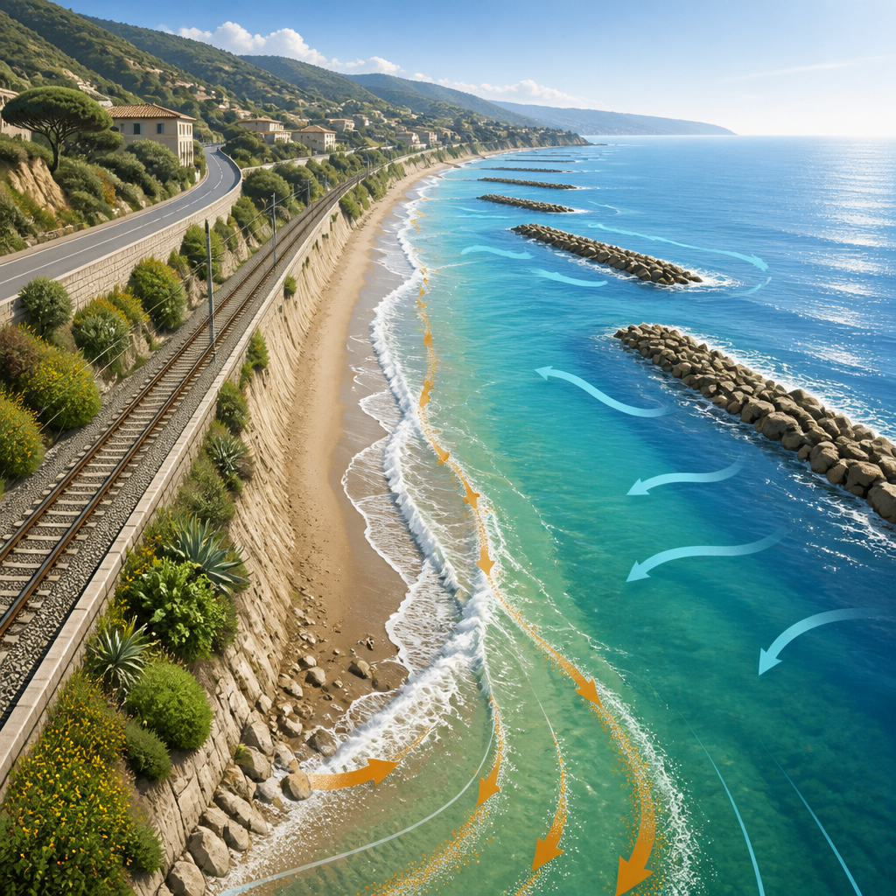
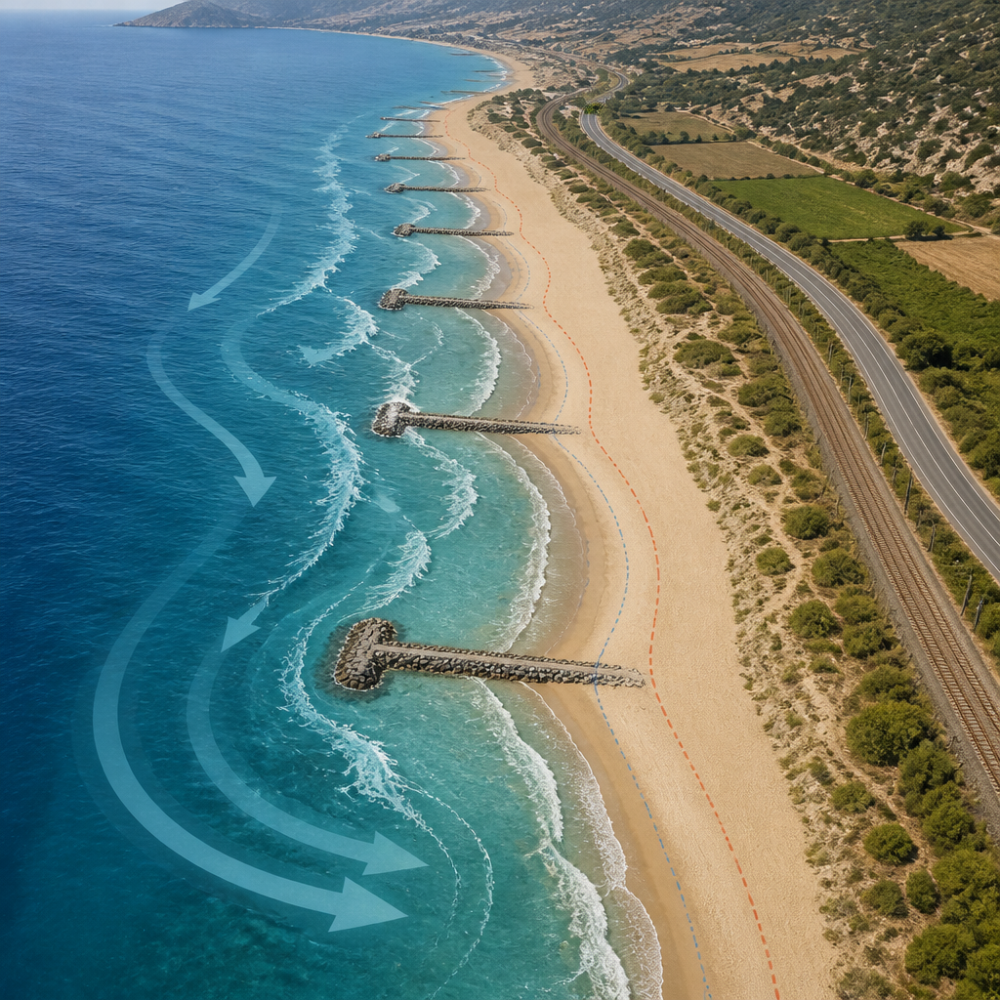

Testato a San Lucido, il calcolatore mette insieme evoluzione delle spiagge, infrastrutture e movimento dei sedimenti.
Stimare quanto costa l’erosione costiera non significa soltanto misurare la spiaggia che scompare. Occorre considerare come cambia il litorale, quali infrastrutture sono presenti e in che modo si muovono i sedimenti, cioè sabbia e altri materiali trasportati da onde e correnti. Per questo ENEA, in collaborazione con ISPRA e Cnr, ha sviluppato CoDeC, acronimo di Calcolo del Degrado Costiero.
Lo strumento serve a stimare gli impatti economici e ambientali dell’erosione. Può calcolare i volumi di sabbia necessari per il ripascimento degli arenili, il deposito periodico di sabbia compatibile con quella originaria, e i costi delle opere di difesa costiera, come i frangiflutti. Considera inoltre le risorse necessarie per ripristinare ecosistemi e infrastrutture danneggiati da eventi meteo estremi o da interventi antropici.
CoDeC è stato testato per la prima volta lungo la costa tirrenica della Calabria, nel comune di San Lucido, in provincia di Cosenza. Qui erosione e pressione antropica rappresentano da decenni una minaccia per gli ecosistemi naturali, per l’economia turistica e per le infrastrutture presenti: la linea ferroviaria e la strada litoranea.
I ricercatori hanno analizzato una serie storica di ortofoto, immagini dall’alto del litorale, e dati satellitari raccolti dal 1954 al 2018. In questo modo hanno ricostruito l’evoluzione della linea di costa e delle variazioni della superficie di spiaggia emersa. Nel lungo periodo la superficie è passata da circa 414 mila a 159 mila metri quadrati: una perdita complessiva di circa il 62%.

Una riduzione rilevante si è verificata anche tra il 1987 e il 1994, quando la spiaggia ha perso circa 120 mila metri quadrati in concomitanza con la realizzazione delle opere di difesa costiera. Secondo l’analisi, il fenomeno è legato sia all’urbanizzazione sia alle difese rigide, che hanno alterato il trasporto naturale dei sedimenti.
L’area di San Lucido è in erosione dalla fine dell’Ottocento, in concomitanza con la costruzione della linea ferroviaria su strette terrazze costiere esposte al moto ondoso e all’instabilità dei versanti. Nel tempo sono stati registrati danni alle infrastrutture e impatti socioeconomici significativi. Nel 1985 la linea ferroviaria è stata compromessa, risultando direttamente esposta all’azione delle mareggiate.
Per proteggere la continuità del tratto ferroviario sono state realizzate opere di difesa, tra cui i pennelli a T: strutture perpendicolari alla costa che, senza un adattamento progressivo e una gestione dei sedimenti, possono creare uno squilibrio sedimentario. Le strutture a T possono aggravare questo effetto se non sono accompagnate da ripascimento e manutenzione sistematici. In queste condizioni, il trasporto naturale guidato da onde e correnti non basta a sostenere il sistema costiero e la redistribuzione dei sedimenti dipende dagli interventi umani.
Le opere rigide, come muri e frangiflutti, sono state a lungo la principale strategia di difesa. Tuttavia possono trasferire l’erosione verso aree vicine e richiedono manutenzione continua. Il caso di San Lucido viene quindi indicato come un esempio utile per valutare non solo gli effetti dell’erosione sulle infrastrutture, ma anche i possibili effetti a cascata sull’interruzione di servizi essenziali.
Sulla base dei dati disponibili, CoDeC ha stimato circa 12,5 milioni di euro per il ripascimento con circa 540 mila metri cubi di sedimenti. Per la manutenzione sarebbero necessari circa 300 mila euro all’anno, considerando un fabbisogno di circa 20 mila metri cubi di sedimenti annui. Le cifre possono variare in funzione delle cave o dei depositi di sedimento scelti.
Il caso calabrese si inserisce in un quadro più ampio: in Italia, negli ultimi 50 anni, sono andati persi circa 40 milioni di metri quadrati di spiagge. Il fenomeno riguarda circa il 40% delle coste sabbiose e interessa l’intero Mediterraneo, sempre più esposto all’innalzamento del mare e agli eventi estremi. Il turismo, che contribuisce per circa il 5% al PIL, subisce impatti significativi.
La perdita di spiaggia non riguarda quindi soltanto lo spazio ricreativo. Spiagge, dune e praterie di Posidonia oceanica funzionano naturalmente come protezione costiera contro mareggiate e inondazioni, finché questi sistemi vengono conservati con interventi compatibili. Quando l’uso della costa si sbilancia verso infrastrutture e insediamenti, il costo della protezione può diventare elevato e spesso insostenibile per le realtà locali.
Il gruppo di ricerca punta ora a potenziare CoDeC con ortofoto storiche, dati di monitoraggio in tempo reale e modelli di apprendimento automatico, sistemi che elaborano dati per individuare schemi. Sono previste anche interfacce per il supporto alle politiche pubbliche e alla gestione delle emergenze. L’uso di infrastrutture di calcolo avanzate, indicate come HPC, dovrebbe consentire di estendere le metodologie alla scala nazionale e rafforzare la pianificazione e la gestione del rischio costiero.
CoDeC stima danni, costi di protezione e ripristino legati all’erosione costiera. A San Lucido, tra il 1954 e il 2018, la superficie di spiaggia emersa si è ridotta di circa il 62%. Il calcolatore valuta anche la sabbia necessaria per il ripascimento e le risorse richieste per mantenere gli interventi nel tempo.
Questo articolo l'hai letto sul blog di Meteo News Radar: un'app che ti mostra da dove vengono i numeri, invece di limitarsi a dartelo. E ogni mattina ne trovi uno nuovo come questo.